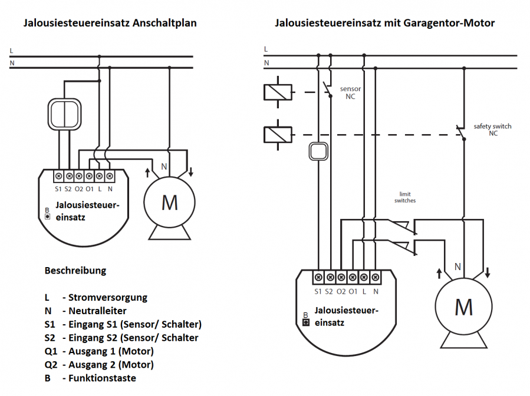

FIB_FGRM-222
Firmware Version : 22.22 |
 |
KurzinfoA Dieses Gerät ist ein Z-Wave-Aktor. Zum Inkludieren des Gerätes bringen Sie Ihren Controller in den Inklusionsmodus und drücken dreimal schnell hintereinander die B-Taste oder den Taster am Anschluss S1. Sie können ebenfalls die Auto-Inklusion Funktion verwenden, indem Sie Ihren Controller in den Inklusionsmodus bringen, und das Gerät an die Stromversorgung anschließen, dabei wird der Fibaro Jalousiesteuereinsatz 2 automatisch inkludiert. Weitergehende Informationen finden sich in den jeweiligen Abschnitten dieses Handbuches. |
Produktbeschreibung
Mit dem Fibar-Steuereinsatz haben Sie die Möglichkeit, Ihre Standard-Elektroinstallation für die Steuerung von Rollos, Markisen, Jalousien und anderen Einphasen-Wechselstrom-Geräten zu einem intelligenten Z-Wave-basierten System umzurüsten. Anders als mit dem Fibaro Jalousiesteuereinsatz 1 (FGR-221) können Sie mit diesem Gerät zusätzlich auch Garagen-Tore steuern und den eigenen Stromverbrauch und die Leistungaufnahme sowie die der angeschlossenen Geräte messen. Der Jalousiesteuereinsatz FGRM-222 ermöglicht die präzise Positionierung von Motoren mit mechanischem und elektrischem Endschalter. Zusätzlich verfügt dieses Gerät über eine Stromüberwachung.
Der Einsatz wird in einer Wanddose direkt hinter dem dort bereits befindlichen konventionellen Schalter platziert. Der Schalter schaltet den Verbraucher nun nicht mehr direkt, sondern liefert nur noch ein Steuersignal zum Fibar-Gerät, das wiederum den Verbraucher steuert. Diese Steuerung erfolgt entweder über den lokalen Schalter oder über Funk.
Dieses Produkt funktioniert mit jeder Schalterserie und jedem Design, wenn in der Einbaudose genügend Platz zur Installation vorhanden ist. In großen 65 mm tiefen Dosen sollte dies regelmäßig der Fall sein. In kleineren Dosen (z.B. 45 mm) hängt die Einsatzmöglichkeit von der benötigten Tiefe des konventionellen Schalters sowie vom Platzbedarf der gegebenenfalls ebenfalls in der Dose befindlichen Elektroverbinder ab. Dieses Gerät ist für ein Dreileitersystem vorgesehen, dass heisst, es muss zur Installation ein Neutralleiter (blau) vorhanden sein.
Installationsanleitung
Der Schalteinsatz passt in normale Europäische Wanddosen mit 60 mm Durchmesser und ist mit 15 mm Höhe sehr klein, weshalb er auch hinter einem traditionellen Wandschalter montiert werden kann. Dieser Wandschalter dient dann als externer Steuerschalter zum Schalter von Lasten - die Schaltrelais selbst sind im Einsatz realisiert.
Die Anschlussklemmen N und L werden direkt mit den Zuleitungen des Stromnetzes verbunden. Die drei Leitungen vom Motor werden wie im Bild angeschlossen.

Es ist möglicht, aber nicht zwingend notwendig, eine lokale Bedienung des Schalters durch einen direkt auf die Wanddose installierten traditionellen Schalter zu realisieren. Dazu dienen die Anschlussklemmen S1, S2 .
Achtung: An diese Anschlussklemmen darf kein Netzstrom angelegt werden. Dies führt sofort zur Zerstörung des Schalters.
Die lokale Steuerung kann durch einen einfachen Doppel-Kippschalter (bistabil) oder einen Doppeltaster (monostabil) erfolgen. Der angeschlossene Schaltertyp muss nach der Inklusion über das Setzen des Konfigurationsparameter 14 gewählt werden. Die Werkseinstellung lautet auf Taster. Der lokale Steuerschalter wird wie in den oben angegebenen Schaltungen an den Schalter angeschlossen. Sollte ein bistabiler Schalter angeschlossen werden, muss der Schalter ausgeschaltet bleiben, solange der Steuerschalter nicht in das Z-Wave Netz inkludiert wurde.
Der Jalousiesteuereinsatz 2 kann auch zur Steuerung von Garagentoren verwendet werden. Dabei muss ein zusätzlicher NC Schautzschalter und ein NC Sensor wie in der Abbildung angeschlossen werden.
Achtung: Der Schalteinsatz besitzt eine automatische Endlagenerkennung. Dazu muss der Einsatz bei Betrieb mit einem Rohr-Motor mit Endlagenschaltern verbunden sein. Ein Testbetrieb ohne Motor führt zu falschem Verhalten.
Wenn das Modul nicht ordnungsgemäß funktioniert, muss es kalibriert werden. Beim Kalibrieren lernt der Jalousiesteuereinsatz die Endlagen und Charakteristik des Motors. Dazu wird automatisch ein vollständiger Bewegungsablauf zwischen den Endlagen durchgefährt (hoch, runter, hoch). Es gibt verschiedene Möglichkeiten die Kalibrierung des Gerätes zu initialisieren.
Kalibrierung:
Kalibrierung durch das Z-Wave Netzwerk
- Stellen Sie sicher, dass das Gerät mit dem Stromnetz verbunden ist.
- Inkludieren Sie das Gerät in das Z-Wave Netzwerk gemäß der Beschreibung.
- Setzen Sie den Parameter 29 auf 1.
- Der Jalousiesteuereinsatz führt automatisch einen vollständigen Bewegungsablauf aus (hoch, runter, hoch).
- Der Parameter 29 wird dabei automatisch wieder auf den Wert 0 gesetzt.
- Führen Sie einen Test durch, um die korrekte Funktion des Gerätes zu überprüfen.
Kalibrierung durch Taster
- Stellen Sie sicher, dass das Gerät mit dem Stromnetz verbunden ist, und die schalter S1 uns S2 angeschlossen sind.
- Inkludieren Sie das Gerät in das Z-Wave Netzwerk gemäß der Beschreibung.
- Drücken und halten Sie den S1 oder S2 Taster für mindestens 3 Sekunden.
- Drücken und halten Sie den gleichen Taster erneut für 3 Sekunden.
- Drücken und halten Sie den gleichen Taster ein drittes Mal für 3 Sekunden.
- Nach dem Dritten Betätigen und Loslassen des Tasters beginnt die automatische Kalibrierung.
- Der Jalousiesteuereinsatz führt automatisch einen vollständigen Bewegungsablauf aus (hoch, runter, hoch).
Kalibrierung durch Menü (B Taster)
- Stellen Sie sicher, dass das Gerät mit dem Stromnetz verbunden ist.
- Inkludieren Sie das Gerät in das Z-Wave Netzwerk gemäß der Beschreibung.
- Drücken und halten Sie den B Taster für ca. 6 Sekunden.
- Die LED's leuchten blau.
- Lassen Sie die B Taste kurz los und drücken diese schnell wieder.
- Der Jalousiesteuereinsatz führt automatisch einen vollständigen Bewegungsablauf aus (hoch, runter, hoch).
Kalibrierung der Lamellen im Jalousie Modus
Unabhängig von der Kalibrierung der Jalousieposition kann (nur in Verbindung mit dem Fibaro Home Center 2) die Lamellenstellung bei Jalousien eingestellt werden. Dabei kann der Abstand der einzelnen Lamellen und deren Winkel festgelegt werden. Standardmäßig ist die Zeit für eine volle Drehung der Lamellen auf 1,5 Sekunden eingestellt. Bei Bedarf kann das mit den folgenden Schritten geändert werden.
- Stellen Sie sicher, dass das Gerät mit dem Stromnetz verbunden ist.
- Inkludieren Sie das Gerät in das Z-Wave Netzwerk gemäß der Beschreibung.
- Kalibrieren Sie die Jalousie gemäß der vorangegangenen Beschreibung.
- Setzen Sie den Parameter 10 auf 2 oder stellen Sie im Interface des Fibaro Home Center 2 den Geräte-Typ auf Jalousie.
- Im Interface des Home Center 2 erscheint eine neue Schaltfläche für Lamellen-Bedienung. Mit anderen Z-Wave Controllern können Sie die Stellung der Lamellen mit einem der angeschlossenen Taster ändern (hoch oder runter).
- Der Standardwert für eine komplette Drehung der Lamellen ist auf 1.500 ms (1,5 s) voreingestellt.
- Drehen Sie die Lamellen zwischen den beiden äußeren Positionen. Wenn sich nach einer vollen Drehung die Jalousie hoch oder runter bewegt, muss der Paarameter 12 geändert werden, z.B auf 1.000 ms (1 s). Sind die Lamellen richtig eingestellt, sollte sich die Jalousie beim Drehen der Lamellen nicht mehr hoch oder runter bewegen.
Verhalten des Gerätes im Z-Wave Netz
I Im Auslieferungszustand ist das Gerät mit keinem Z-Wave-Netz verbunden. Damit es mit anderen Z-Wave Geräten kommunizieren kann, muss es in ein bestehendes Z-Wave Netz eingebunden werden. Dieser Prozess wird bei Z-Wave Inklusion genannt. Geräte können Netzwerke auch wieder verlassen. Dieser Prozess heißt bei Z-Wave Exklusion. Beide Prozesse werden von einem Controller gestartet, der dazu in einen Inklusion- bzw. Exklusion-Modus geschaltet werden muss. Das Handbuch des Controllers enthält Informationen, wie er in diese Modi zu schalten ist. Erst wenn der Controller des Z-Wave Netzes im Inclusion-Modus ist, können Geräte hinzugefügt werden. Das Verlassen des Netzes durch Exklusion führt zum Rücksetzen dieses Gerätes in den Auslieferungszustand.
Zum Inkludieren/Exkludieren des Gerätes drücken Sie dreimal schnell hintereinander die B-Taste oder den Taster am Anschluss S1. Sie können ebenfalls die Auto-Inklusion Funktion verwenden, indem Sie Ihr Home Center oder anderen Controller in den Inklusionsmodus bringen, und das Gerät an die Stromversorgung anschließen, dabei wird der Fibaro Jalousiesteuereinsatz 2 automatisch unkludiert.
Bedienung des Gerätes
Der Fibaro Jalousiesteuereinsatz 2 hat verschiedene Betriebsmodi. Jeder Modus hat verschiedene Parameter für Einstellungen:
- Rolladen Modus ohne Positionsunterstützung (Parameter 10 auf 0).
- Rolladen Modus mit Positionsunterstützung (Parameter 10 auf 1).
- Jalousie Modus (Parameter 10 auf 2; Parameter 13 auf 2).
- Garagentor Modus ohne Positionsunterstützung (Parameter 10 auf 3; Parameter 12 auf 0; Parameter 17 auf 0)
- Garagentor Modus mit Positionsunterstützung (Parameter 10 auf 4; Parameter 12 auf 0; Parameter 17 auf 0).
Nach der Einstellung des Betriebs-Modus can der Jalousiesteuereinsatz mit dem Fibaro Home Center 2 oder jedem anderen Z-Wave Primärcontroller bedient werden. Der Jalousiesteuereinsatz erlaubt das Anschließen von Tastern oder Kippschaltern an die Eingänge S1 und S2. Taster sind notwendig für die Bedienung der Blenden.
Benutzung von Tastern:
Drücken des HOCH Tasters am Eingang S1 bewegt die Blende nach oben. Drücken des RUNTER Tasters am Eingang S2 bewegt die Blende nach unten.
Wenn sich die Blende bewegt führt das Drücken jeder beliebigen Taste zum Stoppen der Bewegung. Zusätzlich führt das Drücken einer Taste zum senden eines Command Frames an alle Geräte der 1. Assoziationsgruppe. Bei Jalousien kann zusätzlich der Winkel der Lamellen eingestellt werden.
Das längere Drücken des Tasters am Eingang S1 führt zum Drehen der Lamellen nach oben. Das längere Drücken des Tasters am Eingang S2 führt zum Drehen der Lamellen nach unten. Zusätzlich wird beim längeren Drücken eines Tasters ein Fibaro Command Control Frame an alle Geräte der 2. Assoziationsgruppe gesendet.
Benutzung von Kippschaltern:
Ändern der Schalterstellung am Eingang S1 bewegt die Blende nach oben. Ändern der Schalterstellung am Eingang S2 bewegt die Blende nach unten. Die mittlere Schalterstellung führt zum Stoppen der Bewegung.
Assoziationen - wie werden andere Geräte gesteuert?
A Z-Wave Geräte können andere Geräte direkt steuern. Diese direkte Steuerung heißt in Z-Wave Assoziation. In den steuernden Geräten muss dazu die Geräte-ID des zu steuernden Gerätes hinterlegt werden. Dies erfolgt in sogenannten Assoziationsgruppen. Eine Assoziationsgruppe ist immer an ein Ereignis im steuernden Gerät gebunden (Tastendruck oder Auslösen eines Sensors). Bei Eintritt dieses Ereignisses wird an alle in einer Assoziationsgruppe hinterlegten Geräte ein Steuerkommando gesendet.
Assoziationsgruppen:
| 1 | ausgelöst durch einen Taster-Klick oder Positionswechsel eines Kippschalters (max. Anzahl Geräte: 16) |
| 2 | ausgelöst durch Halten eines Tasters (max. Anzahl Geräte: 16) |
| 3 | meldet den Gerätestatus; Standardeinstellung ist Primärcontroller (max. Anzahl Geräte: 1) |
Konfigurationseinstellungen
Z-Wave Produkte können direkt nach der Inklusion im Netz verwendet werden. Durch Konfigurationseinstellungen kann das Verhalten des Gerätes jedoch noch besser an die Anforderungen der Anwendung angepasst und zusätzliche Funktionen aktiviert werden.
WICHTIG: Manche Steuerungen erlauben nur die Konfiguration von vorzeichenbehafteten Werten zwischen -128 und 127. Um erforderliche Werte zwischen 128 und 255 zu programmieren, muss der gewünschte Wert minus 256 eingegeben werden. Beispiel: um einen Parameter auf einen Wert von 200 zu setzen, müsste der Wert 200-256 = -56 eingegeben werden, wenn nur positive Werte bis 128 akzeptiert werden. Bei Werten von 2 Byte Länge wird die gleiche Logik angewandt: Werte über 32768 werden als negative Werte angegeben
| Wert | Beschreibung |
|---|---|
| 0 | 0 - kein Schutz. Gerät reagiert auf lokale Eingaben. (Voreingestellt) |
| 1 | 1 - nicht unterstützt. |
| 2 | 2 - lokaler Schutz aktiviert. Gerät reagiert nicht auf lokale Eingaben. |
| Wert | Beschreibung |
|---|---|
| 0 | 0 – Schutz deaktiviert. Gerät reagiert auf Command Frames. (Voreingestellt) |
| 1 | 1 - Funk Schutz aktiv. Gerät reagiert nicht auf command frames. |
| 2 | 2 - nicht unterstützt. |
| Wert | Beschreibung |
|---|---|
| 0 | 0 - Jalousie Positions Report wird als Z-Wave Kommando an Primärcontroller gesendet. (Voreingestellt) |
| 1 | 1 - Jalousie Positions Report wird als Fibaro Kommando an Primärcontroller gesendet. |
| Wert | Beschreibung |
|---|---|
| 0 | 0 - Rolladen Modus, ohne Positionsunterstützung |
| 1 | 1 - Rolladen Modus, mit Positionsunterstützung (Voreingestellt) |
| 2 | 2 - Jalousie Modus, mit Positionsunterstützung |
| 3 | 3 - Garagentor-Modus, ohne Positionsunterstützung |
| 4 | 4 - Garagentor-Modus, mit Positionsunterstützung |
| Wert | Beschreibung |
|---|---|
| 32769 — 32767 | Wert 0 bedeutet das Garagentor schließt nicht automatisch. |
| Wert | Beschreibung |
|---|---|
| 0 | 0 - Lamellen gehen in gespeicherte Position, bei Primärcontroller-Aktion. |
| 1 | 1 - Lamellen gehen in gespeicherte Position, bei Primärcontroller-Aktion, Taster Steuerung oder wenn der Endpositions-Schalter erreicht ist. (Voreingestellt) |
| 2 | 2 - Lamellen gehen in gespeicherte Position, bei Primärcontroller-Aktion, Taster Steuerung, wenn der Endpositions-Schalter erreicht ist oder wenn ein "STOP" Control Frame empfangen wird (Switch Multilevel Stop). |
| Wert | Beschreibung |
|---|---|
| 0 | 0 - Taster (Voreingestellt) |
| 1 | 1 - Kippschalter |
| 2 | 2 - Einfacher Taster. (Taster sollte am S1 Eingang angeschlossen sein). |
| Wert | Beschreibung |
|---|---|
| 129 — 127 | Wert 10 = 1s. Im Garagentor Modus, ist Wert zum Ausschalten der Relais automatisch auf 3 Sekunden gesetzt, und kann nicht geändert werden. Wert 0 bedeutet Tor wird nicht automatisch geschlossen. |
| Wert | Beschreibung |
|---|---|
| 129 — 127 | Wert 0 bedeutet, Erreichen der Endposition wird nicht gemeldet. |
| Wert | Beschreibung |
|---|---|
| 32769 — 32767 | Wert 0 bedeutet Funktion ist deaktiviert. |
| Wert | Beschreibung |
|---|---|
| 0 | 0 - deaktiviert. (Wert 0 wird automatisch nach dem Kalibirerungsprozess gesetzt). (Voreingestellt) |
| 1 | 1 - Start des Kalibrierungsprozesses |
| Wert | Beschreibung |
|---|---|
| 0 | 0 - keine Reaktion. |
| 1 | 1 - Öffnen. |
| 2 | 2 - Schließen. (Voreingestellt) |
| Wert | Beschreibung |
|---|---|
| 0 | 0 - keine Reaktion. (Voreingestellt) |
| 1 | 1 - Öffnen. |
| 2 | 2 - Schließen. |
| Wert | Beschreibung |
|---|---|
| 0 | 0 - keine Reaktion. |
| 1 | 1 - Öffnen. (Voreingestellt) |
| 2 | 2 - Schließen. |
| Wert | Beschreibung |
|---|---|
| 0 | 0 - keine Reaktion. |
| 1 | 1 - Öffnen. (Voreingestellt) |
| 2 | 2 - Schließen. |
| Wert | Beschreibung |
|---|---|
| 0 | 0 - Lamellenposition nicht ändern. Lamellen gehen in die letzte Position zurück. |
| 1 | 1 - Lamellen gehen in weiteste Position. (Voreingestellt) |
| Wert | Beschreibung |
|---|---|
| 1 — 100 | Wert 0 bedeutet report ist deaktiviert. (Voreingestellt 10) |
| Wert | Beschreibung |
|---|---|
| 32769 — 32767 | Wert 0 bedeutet Meldung ist deaktiviert. |
| Wert | Beschreibung |
|---|---|
| 130 — 127 | Wert 0 bedeutet Report ist deaktiviert. |
| Wert | Beschreibung |
|---|---|
| 0 | 0 - Eigenverbrauchsmessung inaktiv. (Voreingestellt) |
| 1 | 1 - Eigenverbrauchsmessung aktiv. |
| Wert | Beschreibung |
|---|---|
| 0 | 0 - Assoziationen aktivieren (Voreingestellt) |
| 1 | 1 - Szenen aktivieren |
Technische Daten
| Explorer Frames | Ja |
| SDK | 4.55 |
| Geräteart | Slave with routing capabilities |
| Allgemeiner Z-Wave-Gerätetyp | Multilevel Switch |
| Spezieller Z-Wave-Gerätetyp | Motor Control Class B |
| Router | Ja |
| FLiRS | Nein |
| Firmware Version | 22.22 |